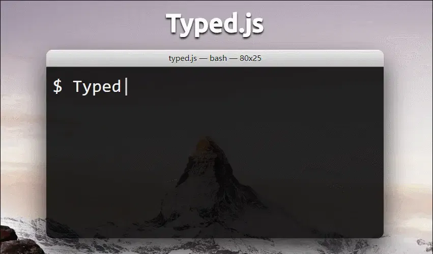

Typed.js 是一个用于创建动态文本效果的 JavaScript 库，广泛用于增强网站用户界面的互动性。以下是一篇关于 Typed.js 的详细介绍文章，包括其使用场景、基本用法、配置选项以及总结。
在现代网站设计中，动态效果和交互性越来越受到重视。Typed.js 是一个简洁而强大的 JavaScript 库，专门用于创建令人印象深刻的动态文本效果。本文将详细介绍 Typed.js 的使用场景、基本用法和配置选项，并提供一些实用的示例。
Typed.js 是一个开源的 JavaScript 插件，旨在通过打字动画模拟打字效果。它允许开发者在网页上创建渐进式的文本输入效果，使用户体验更加生动和引人注目。
Typed.js 适用于多种场景，包括但不限于：
要开始使用 Typed.js，首先需要在网页中引入它。你可以通过 CDN 或者直接下载库文件。
通过 CDN 引入：
<script src="https://cdn.jsdelivr.net/npm/typed.js@2.0.12/lib/typed.min.js"></script>
通过 npm 安装：
npm install typed.js
并在你的 JavaScript 文件中导入：
import Typed from "typed.js";
在 HTML 文件中，添加一个用于显示动态文本的元素。例如
<div id="typed-output"></div>
在 JavaScript 文件中，初始化 Typed.js 实例：
const options = {
strings: ["Hello World!", "Welcome to my website.", "Enjoy your stay!"],
typeSpeed: 50, // 打字速度（每个字符毫秒数）
backSpeed: 25, // 删除速度（每个字符毫秒数）
backDelay: 1000, // 删除延迟（毫秒数）
startDelay: 500, // 开始延迟（毫秒数）
loop: true, // 是否循环
};
const typed = newTyped("#typed-output", options);
Typed.js 提供了丰富的配置选项来定制打字效果：
示例 1: 基本打字效果
const options = {
strings: [
"Welcome to our site!",
"Explore our features.",
"Contact us for more info.",
],
typeSpeed: 40,
backSpeed: 20,
backDelay: 500,
loop: true,
};
const typed = newTyped("#typed-output", options);
示例 2: 打字与删除混合效果
const options = {
strings: [
"Learning JavaScript...",
"Mastering front-end development...",
"Building amazing websites...",
],
typeSpeed: 30,
backSpeed: 50,
backDelay: 1000,
startDelay: 500,
loop: true,
showCursor: true,
};
const typed = newTyped("#typed-output", options);
Typed.js 是一个轻量级且功能强大的库，适用于各种网站和应用程序的动态文本效果。它的易用性和灵活性使得开发者能够轻松创建引人注目的打字动画。无论你是为了增强用户体验，还是为了展示关键内容，Typed.js 都是一个值得尝试的工具。通过配置选项，你可以定制出符合需求的打字效果，使你的网页更加生动有趣。
使用 Typed.js，你的网页将不仅仅是静态的文本展示，而是充满活力的互动体验。立即尝试 Typed.js，为你的项目增添动态效果吧！